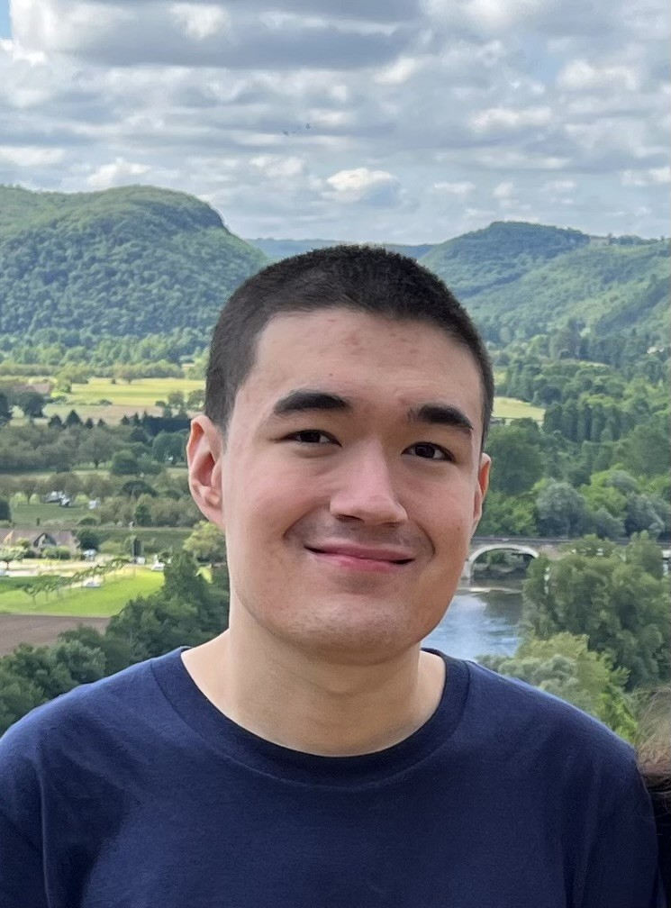

Hi, My name is Chad Young and I'm currently a Senior at the University of Silicon Valley (USV). I am majoring in Game Engineering and have always been fascinated with the logic that goes into video game design.
During my childhood, I've been intrigued by all elements of computing and software engineering. I started game development using Game Maker 7. I've reverse engineered games created using Game Maker, as well as experimented with the suite of tools used in the engine. As I got older, I've been studying numerous programming languages including C++, Java, Javascript, Lua, GDScript and C#, and also learned how to use Unreal Engine, Unity and Godot. Having knowledge of numerous programming languages is such a valuable asset to bring to a video game development team, since many games use different languages.
Later in high school, I made a Java based game inspired by pong, with various maps such as a "brick-breaker" level and a level where the goals constantly shrink and grow.
I've worked with teams and have been proven to be a very reliable teammate. Through the course of several development projects, my fellow team members have noted my significant contributions. These projects include games such as Goober and Oublivious. During these projects, I rapidly learned and deployed new skills such as GDScript, Godot, and Unity.
My demonstrated ability to quickly learn new skills is a critical foundational element to success in the games industry, since new technologies are being constantly released, and many new games frequently use them.
I am the founder of CTY Technologies, an electronics repair startup. I plan for the company to be a future game studio, with an integrated team that operated highly effectively in game development. In addition, my role as Vice President of the USV Game Development club provides me the opportunity to both lead and participate in team efforts to the development of games.